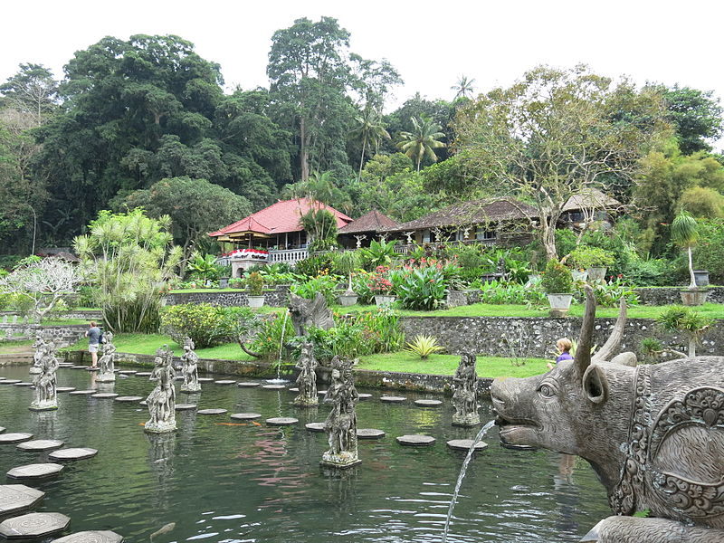

|  | Tirta Gangga dahulunya merupakan taman air milik Kerajaan Karangasem yang dibangun oleh Raja Karangasem, Anak Agung Anglurah Ketut Karangasem Agung pada tahun 1946. Tirta Gangga berasal dari kata “Tirta” yang bermakna air suci dan kata “Gangga” yang merupakan nama sebuah sungai suci di India. Dari namanya inilah, dimaksudkan bahwa taman wisata ini memiliki air suci yang berasal dari Sungai Gangga, dan sebagai bentuk penghormatan kepada masyarakat pemeluk agama Hindu. Tirta Gangga dibangun di lahan seluas 1,2 hektar yang memanjang dari timur ke barat di kawasan persawahan. Ada tiga bangunan yang menjadi dominasi karakternya yakni terdapatnya patung, bangunan kolam dan areal perkebunan. Semua bangunan tersebut memiliki makna tersirat di dalamnya. |
Kondisi alam Tirta Gangga sangatlah sejuk, hal ini dikarenakan letaknya di kaki Gunung Agung. Keasrian dan kesejukan lokasinya inilah yang membuat wisatawan nyaman dan betah untuk berlama-lama mengunjungi obyek wisata ini. Suasana tenang dan damai Tirta Gangga sangatlah cocok sebagai pelepas lelah dan penghilang penat dari aktivitas kehidupan yang melelahkan. Di gerbang pertama, wisatawan akan disambut oleh patung-patung yang berbaris rapi layaknya prajurit. Pengunjung dapat menyusuri kolam dengan berjalan kaki di atas kolam dengan jalan setapak yang terbuat dari batu yang tersusun rapi seperti rangkaian jembatan. Anda dapat berfoto selfie dengan latar belakang patung-patung yang ada di kolam sehingga nampak lebih berkarakter. Tak jauh dari kolam terdapat taman yang memiliki menara air yang tingginya 10 meter. Menara air ini bentuknya berundak-undak laksana atap pura. Air yang ada di kolam Tirta Gangga berasal dari sumber air yang bahkan oleh masyarakat setempat dianggap suci dan digunakan untuk kegiatan upacara adat. Selain kolam yang terdapat air suci, ada juga kolam renang yang diperuntukkan bagi wisatawan. Jika ingin berenang di kolam ini, pengunjung harus membayar kembali 6 ribu rupiah. Kolam yang digunakan adalah kolam air sanih yang juga memiliki air jernih dan segar. Kolam renang untuk anak-anak dibedakan dengan dewasa karena kedalaman kolamnya berbeda. Jangan lupa membawa handuk dan pakaian ganti setelah basah badan selepas berenang. Selepas lelah berenang dan menikmati keindahan alam di lokasi Tirta Gangga, pengunjung dapat mencicipi berbagai menu masakan yang disuguhkan restoran yang terletak di sebelah atas. Bahkan pengunjung juga dapat membeli souvenir dan oleh-oleh di pusat oleh-oleh yang terdapat di sana. |
|
Lokasi Taman Wisata Tirta GanggaTaman Wisata Tirta Gangga terletak di Desa Ababi, Kecamatan Abang, Kabupaten Karangasem. Lokasinya terletak sekitar 5 kilometer sebelah utara dari pusat Kota Amlapura. Jika dari Kuta berjarak sekitar 75 kilometer dengan waktu tempuh kurang lebih 2 jam perjalanan. |
|